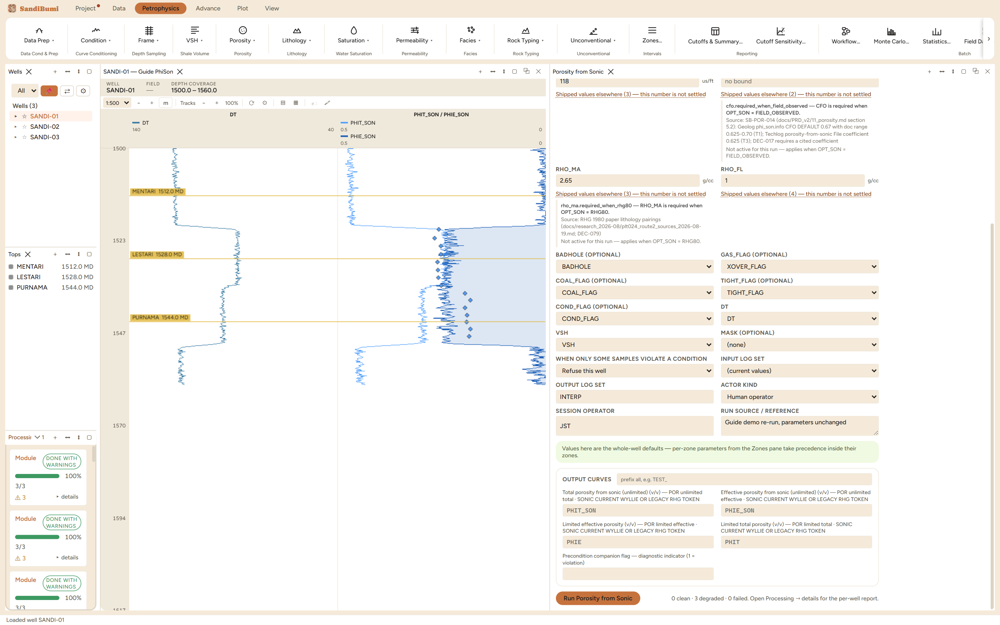

Sonic porosity, three transforms each named for what it computes: the
Wyllie time-average, the genuine three-segment Raymer-Hunt-Gardner 1980
transform, and the field-observed form with a user-cited coefficient. The
sonic's virtue is indifference to hole rugosity that wrecks the density:
reach for it in bad hole, in old wells where sonic is the only porosity log,
and as the independent check on density porosity.
The physics
WYLLIE: PHIT = (DT − DT_MA)/(DT_FL − DT_MA), the linear
time-average, with the optional lack-of-compaction divisor
(OPT_CP: Cp = DT_SH/100). Shale correction is subtractive, the one
convention the installed vendors agree on exactly.
RHG80: the published three-segment transform: velocity form
below 37% porosity, fluid-suspension form above 47%, a linear bridge
between. The suspension segment consumes matrix and fluid densities,
which is why RHG80 requires RHO_MA (the refusal below).
FIELD_OBSERVED: PHI = CFO·(DT − DT_MA)/DT with the coefficient
you cite.
The picks and why
DT_MA 55.5 µs/ft: the shipped Wyllie sandstone default carried
by the pane's source list.
DT_SH 118 µs/ft: the median DT of SANDI-01's shale population
(GR ≥ 112), this dataset's own shale transit time.
WYLLIE, compaction correction OFF, to state the baseline before
any divisor is argued.
The refusal worth knowing about
Switching to RHG80 without a matrix density is refused, all three wells,
before anything runs, demonstrated live and quoted from the per-well
report:
RHO_MA is required when OPT_SON = RHG80.
The suspension segment cannot exist without it, and the module refuses
rather than assuming quartz on your behalf. Supplying RHO_MA 2.65
(the same shipped quartz value the density chapter cites) makes the RHG80
run clean.
Step by step
Run VSH first.
Open Petrophysics ▸ Porosity ▸ Porosity from Sonic, enter the
three transit times with sources in the custody line.
Press Run Porosity from Sonic.
Three transit times and a transform. RHG80 additionally needs
the matrix density its suspension segment consumes.
Reading the result
0 clean · 3 degraded (the shale ceiling clamping the
effective output at scattered samples). Run live on WYLLIE: median PHIT_SON
0.3717, median PHIE_SON 0.1144. Note sonic PHIT reading far
above density PHIT (0.1686): an uncompacted young section with no Cp
divisor applied does exactly this, and the gap is the argument for either
the compaction correction or the RHG transform, not a reason to distrust
the density.
SELECT round(median(value), 4) FROM computed_curves
WHERE curve_name = 'PHIT_SON' AND NOT isnan(value)
The transform sensitivity, measured on the same picks with RHO_MA
supplied: RHG80 reads 0.3473 / 0.2098 against Wyllie's
0.3717 / 0.1144, more than nine porosity units apart on PHIE in this slow,
shaly section, and the RHG run comes back clean where Wyllie's effective
porosities kept meeting the shale ceiling. On a section this uncompacted
the transform choice is every bit as large as the compaction question it
sits beside.

The Wyllie baseline. The RHG80 comparison ran on the same
endpoints once its required matrix density was supplied.
QC and pitfalls
Crossplot sonic against density porosity in clean, in-gauge intervals:
a uniform sonic excess is compaction; a bad-hole-correlated density
deficit is rugosity. The two failure modes separate cleanly on that
plot.
Cycle skips read as porosity spikes; despike the sonic (Condition
book) before interpreting.
If OPT_CP goes ON, say so wherever the number is quoted: a Cp near
1.18 here scales every Wyllie porosity down by the same factor, and two
reports differing only in Cp look like two different rocks.